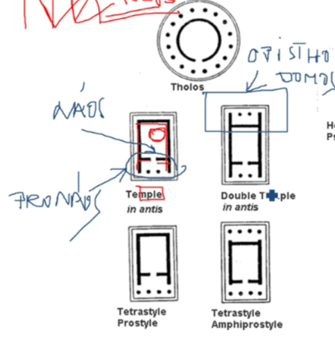
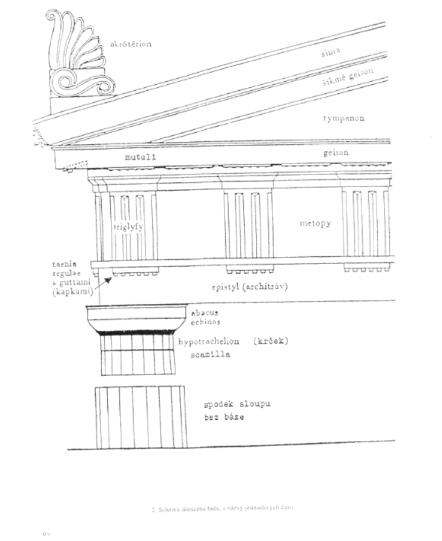
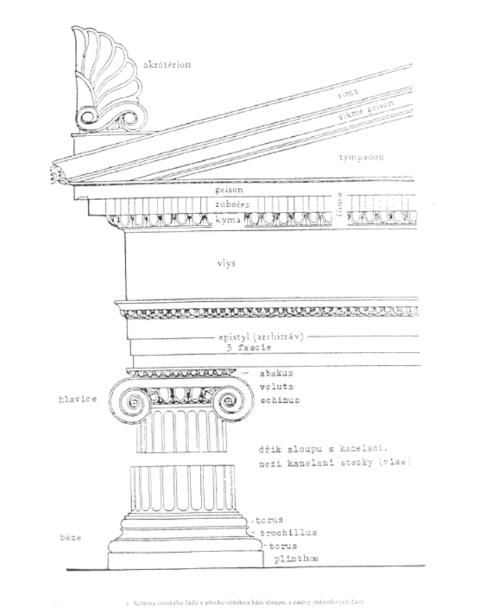
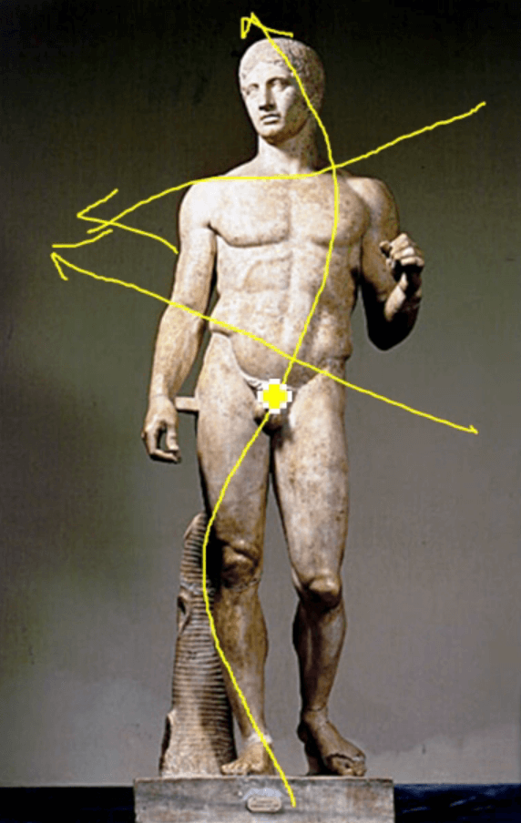
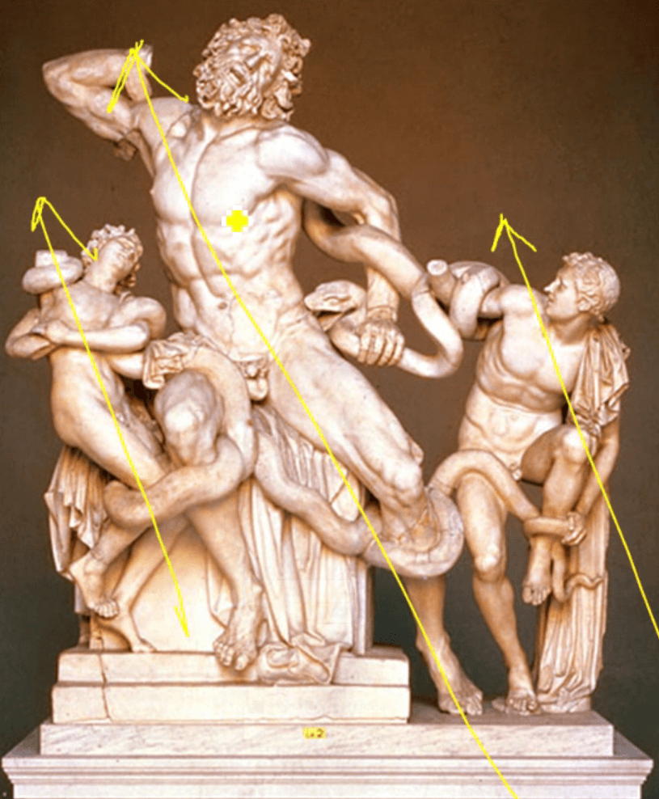

4. Řecké antické umění
-
význam má hlavně moře → hlavně
přímořská města, netvořili říši ale spolupracující
městské státy
Chronologie
- kolem 12. století př. n. l.
- Dórové → Řecko
- Iónové → Malá Asie, Turecko
- GEOMETRICKÝ SLOH/TEMNÉ OBDOBÍ (10. – 8. stol. př.n.l.)
- 8. století př. n. l. → Homér
- 776 př. n. l. → první Olympiáda
- ARCHAICKÉ OBDOBÍ (7. – 6. stol. př.n.l.)
- archaický = starý
- ustálení architektonických principů
- KLASICKÉ OBDOBÍ (5. - 4. stol. př.n.l.)
- klasus = vybraný, nejlepší
- řecko-perské války
- zničené Athény
- Perikles znovu vystavěl Athény (klasický sloh)
- HELENISTICKÉ OBDOBÍ (320 - 30 př.n.l.)
- Hellas = Řecko
- umírá Alexandr Veliký
- počátek dominance Řínské říše
ARCHITEKTURA
GEOMETRICKÝ SLOH
- DIPYLSKÉ VÁZY (URNY → POHŘEB ŽEHEM)
- AKROPOLIS (akro = vysoký, polis = město)
- PROSTŘEDEK se sochou Boha → NÁOS nebo CELLA
- PŘEDSÍŇ → PRONÁOS
- ZADEK pro obětiny → O-PIS-THO-DOMOS (není vždy)

- SLOUP
- HLAVICE, DŘÍK, PATKA
- žlábky = KANELURY
- vypouklé = entáze
- nakloněné ke středu stavby
ŘÁDY
- každý má nějakou logiku → nekombinují se
- odvinuto od kmenů
- Dórský - dnešní Řecko
- Iónský - dnešní Turecko
DÓRSKÝ
- ROBUSTNĚJŠÍ (proto považován za mužský)
- NEMÁ PATKU (BÁZI)
- ARCHITRÁV DĚLEN NA TRIGLYFY A METOPY
-
DŘÍK MÁ KANELURY (ŽLÁBKY) → OPTICKY ZVĚTŠUJE (stejné jako
iónský)
- HLAVICE
- JE Z DESKY → ABAKUSU
- ECHINOS → MALÝ KUŽEL NA HOŘE DŘÍKU

IONSKÝ
- JEMNĚJŠÍ, KŘEHČÍ, TENČÍ (proto považován za ženský)
- MÁ PATKU (BÁZI)
-
ARCHITRÁV MÁ VLYS a v něm VÝJEV (DÓRSKÝ MÁ TRIGLYFY A
METOPY)
-
DŘÍK MÁ KANELURY (ŽLÁBKY) → OPTICKY ZVĚTŠUJE (stejné jak
dórský)
- NA HLAVICI JSOU VOLUTY (SPIRÁLY/ZATOČENÍ)

KORINTSKÝ
- OBDOBA IONSKÉHO
-
ROZDÍL MÁ HLAVICE, KTERÁ JE INSPIROVANÁ ROSTLINOU → AKANTEM
SOCHAŘSTVÍ
-
využití polychromu (barevnost) → hlavně modrá a červená
- KÚROS → OBNAŽENÍ CHLAPCI, INSPIRACE EGYPTEM
-
archaický úsměv, pěst, vystouplá noha, zdůrazněné rybí
oči, zgeometrizované vlasy → Egypt
- erotickým motivem byla lýtka
-
KÓRÉ → ženské akty byly tabu, tudíž ženy jsou oblečené
-
archaický úsměv, pěst, vystouplá noha, zdůrazněné rybí
oči, stylizované vlasy připomínající paruky
KLASICKÝ SLOH
- malba na vázy (červená a černá)
- znovuvystavení Athén
- Pantheon → Dórský styl
- byl barevný
- FEIDIAS
-
CHRYSELEFANTINOVÁ PLASTIKA → zlato a slonovina
- Bohyně Niké symbolizující vítězství
-
soustředí se na ženskou anatomii, ovšem nelze dělat akty
-
využití mokrého oblečení (vlhká drapérie) →
lze vidět ňadra a břicho, ovšem žena je pořád
oblečená
- POLYKLEITOS

- váha přenesena na jednu nohu, druhá je uvolněná
- esovité prohnutí
- pas jde do jedné linie, ramena do druhé → tyto linie se pak mimo sochu obrazně potkávají
- PRAXITÉLES
-
Venuše Knidská → zlomení tabu ŽENSKÉHO AKTU
- využití KONTRAPOSTU
HELÉNISTICKÉ OBDOBÍ
- šachovnicové rozložení budov ve městech
- mnoho měst pojmenováno Alexandrie
- DĚTI A STAŘÍ LIDÉ
- robustní (svalnaté) postavy
- diagonály
